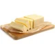
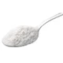
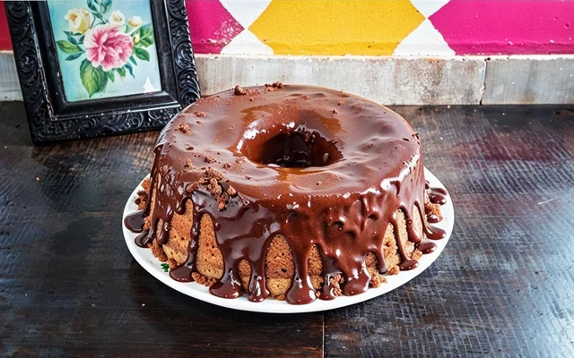
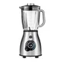
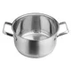

2 colheres (sopa) de manteiga
2 colheres (sopa) de fermento
  4 ovos
4 ovos  4 colheres (sopa) de chocolate em pó
4 colheres (sopa) de chocolate em pó
 3 xícaras (chá) de farinha de trigo
3 xícaras (chá) de farinha de trigo
 2 xícaras (chá) de açúcar
2 xícaras (chá) de açúcar
 1 xícara (chá) de leite
1 xícara (chá) de leite
2 colheres (sopa) de manteiga  7 colheres (sopa) de chocolate em pó
7 colheres (sopa) de chocolate em pó
 2 latas de creme de leite com soro
2 latas de creme de leite com soro  3 colheres (sopa) de açúcar
3 colheres (sopa) de açúcar
 
 Colher de pau
Colher de pau  Forma de bolo
Forma de bolo
⏰ Tempo do preparo: 40 Min
Um bom bolo de chocolate fofinho aquece o coraçãozinho, né? Quer deixar essa receita ainda mais deliciosa e chocolatuda?
Adicione na massa chocolate meio amargo derretido em banho-maria.
O sabor vai ficar ainda mais intenso e incrível, não vai dar vontade de parar de comer!
Peneirar ingredientes, na hora de fazer a massa, ajuda com que ela fique ainda mais linda e cresça bastante!
Por isso, peneire a farinha de trigo e os ovos antes de adicioná-los à massa!
A farinha peneirada evita gruminhos na massa, fazendo com que fique lisa e cresça melhor, e os ovos peneirados tiram o gosto ou odor do ovo da receita, deixando o cheirinho de chocolate tomar conta de tudo!
Incrível, né?
Caso ache necessário, você pode fazer seu bolo de chocolate na batedeira em vez de fazer no liquidificador, o resultado fica perfeito também!
Que tal rechear seu bolo? Existem vários recheios que você pode fazer como beijinho de coco, doce de leite, geleia de morango, mousse de chocolate , brigadeiro de creme de avelã e outros!
Você também pode experimentar esse clássico com outras caldas!
| Produto | Medida | Preço Und | Qnt na receita | Preço total |
|---|---|---|---|---|
| Ovo | Unidade | R$ 0,95/Un | 4un | R$ 3,80 |
| Chocolate em pó | Grama | R$ 25,65/200g | 24g | R$ 8,47 |
| Manteiga | Grama | R$ 15,99/200g | 48g | R$ 3,84 |
| Leite | Mililitro | R$ 5,99/1000ml | 240ml | R$ 1,44 |
| Farinha de Trigo | Grama | R$ 7,29/1000g | 360g | R$ 2,62 |
| Açúcar | Grama | R$ 3,99/1000g | 365g | R$ 1,46 |
| Fermento | Grama | R$ 5,59/100g | 20g | R$ 1,12 |
| C. de leite com soro | Mililitro | R$ 9,89/300ml | 600ml | R$ 19,78 |